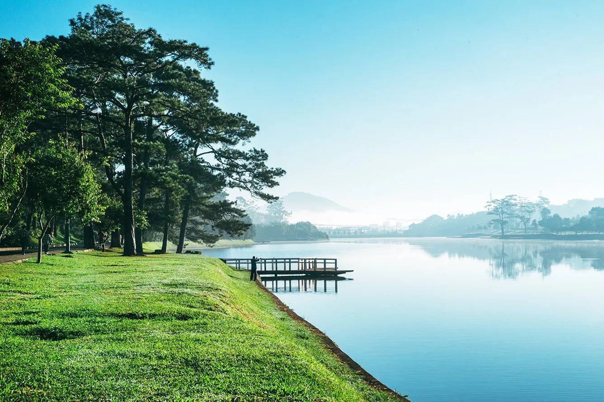
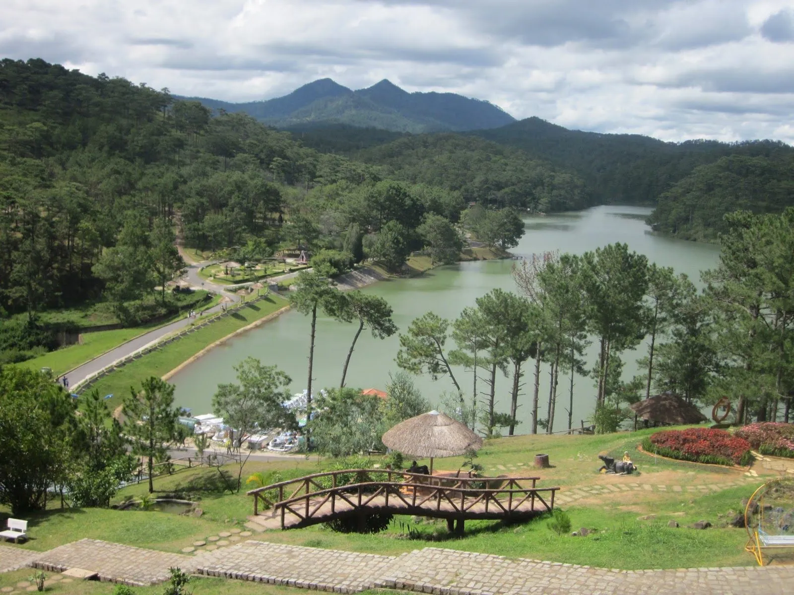
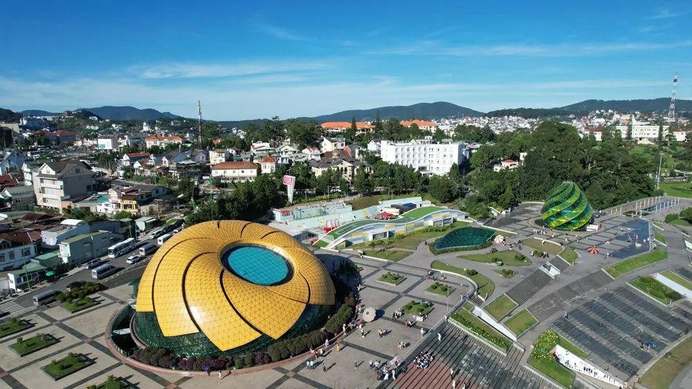
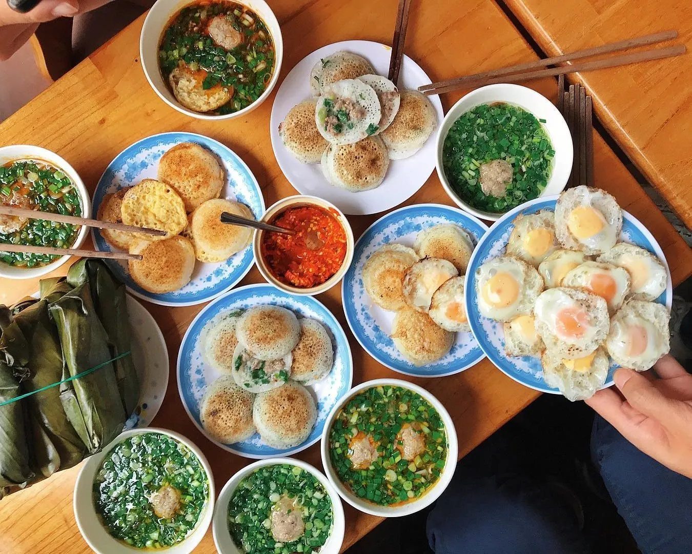
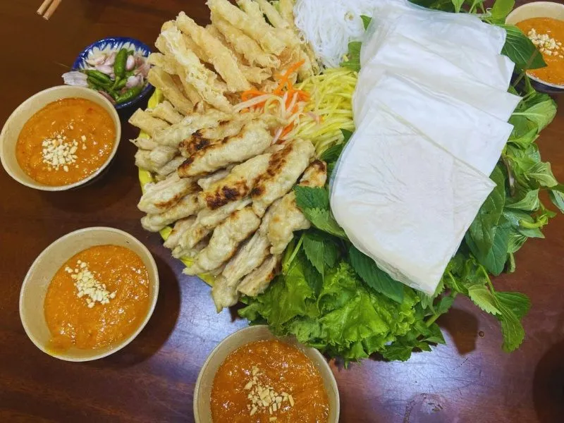

Du lịch Đà Lạt nên đi đâu và ăn gì? Cẩm nang chi tiết 2025

Mục lục bài viết
🌄 Đà Lạt – thành phố ngàn hoa, không chỉ nổi bật với cảnh sắc thiên nhiên tuyệt đẹp mà còn là thiên đường ẩm thực phong phú. Nếu bạn đang lên kế hoạch cho chuyến du lịch Đà Lạt, bài viết này sẽ giúp bạn trả lời câu hỏi: “Du lịch Đà Lạt nên đi đâu, ăn gì?” với những gợi ý địa điểm tham quan và món ngon hấp dẫn nhất hiện nay.
Du lịch Đà Lạt nên khám phá những điểm đến nào?
Đà Lạt là nơi hội tụ của nhiều thắng cảnh nổi tiếng, thích hợp cho cả người yêu thiên nhiên, gia đình, hay nhóm bạn trẻ. Dưới đây là danh sách các địa điểm bạn không thể bỏ qua:
🌅 Hồ Xuân Hương – Trung tâm nhộn nhịp của thành phố hoa
Hồ Xuân Hương là điểm đến quen thuộc cho mọi du khách đến Đà Lạt. Với không gian trong lành và khung cảnh thơ mộng, hồ mang lại cảm giác thư giãn tuyệt vời.
📸 Hoạt động gợi ý: Đạp xe quanh hồ, chèo thuyền vịt, chụp ảnh hoàng hôn.
💡 Lưu ý: Đến vào sáng sớm hoặc chiều tối để tận hưởng không khí mát mẻ và cảnh sắc tuyệt đẹp.

💕 Thung Lũng Tình Yêu – Thiên đường của những cặp đôi
Với không gian xanh mát, những con đường hoa, và hồ nước trong xanh, Thung Lũng Tình Yêu là điểm dừng chân lý tưởng cho các cặp đôi muốn tìm kiếm sự lãng mạn.
🌟 Điểm nổi bật: Mê cung hoa, du thuyền trên hồ, khu vui chơi giải trí.
👨👩👧👦 Phù hợp với: Cặp đôi và gia đình đi cùng trẻ nhỏ.

🌸 Quảng Trường Lâm Viên – Nơi diễn ra nhiều sự kiện văn hóa
Quảng trường nổi bật với hai biểu tượng lớn: hoa dã quỳ và bông atiso khổng lồ, tạo nên không gian sống ảo lý tưởng.
📸 Hoạt động: Chụp ảnh check-in, tham gia lễ hội, vui chơi ngoài trời.
🛍️ Gần chợ đêm Đà Lạt – thuận tiện cho việc mua sắm đặc sản về làm quà.

🍃 Đồi chè Cầu Đất – Trải nghiệm thiên nhiên bình yên
Không chỉ là nơi sản xuất chè nổi tiếng, Đồi chè Cầu Đất còn thu hút du khách bởi không gian xanh mướt, bầu không khí trong lành và cơ hội tham quan quy trình chế biến chè truyền thống.
📸 Hoạt động: Tham quan, chụp ảnh sống ảo, hái chè.
🌅 Thời điểm đẹp nhất: Bình minh để đón ánh nắng vàng óng.

Du lịch Đà Lạt nên ăn những món nào? Top đặc sản ngon không thể bỏ lỡ
Ẩm thực Đà Lạt đa dạng, từ món ăn đường phố đến các món đặc sản truyền thống. Dưới đây là các món ăn bạn nên thử khi đến Đà Lạt:
🥞 Bánh căn xíu mại – Món ăn dân dã đặc trưng Đà Lạt
📍 Địa chỉ gợi ý: Quán bánh căn Nhà Chung – số 13 Nhà Chung, phường 3.
🍽️ Hương vị đặc biệt: Bánh giòn rụm, kết hợp nước chấm đậm đà và topping xíu mại thơm ngon.

🍢 Nem nướng – Đặc sản nổi tiếng với hương vị độc đáo
📍 Địa điểm nên thử: Quán Bà Hùng – 254 Phan Đình Phùng.
🌿 Thưởng thức: Nem nướng kèm rau sống tươi ngon, bánh tráng mỏng và nước chấm đậm đà.

🍧 Kem bơ – Món tráng miệng mát lạnh cho ngày hè
🍦 Nên thử tại: Kem bơ Thanh Thảo – 76 Nguyễn Văn Trỗi.
🥑 Điểm hấp dẫn: Kem mịn béo quyện cùng bơ tươi ngọt ngào.

🔥 Tiệm Nướng & Chill Xóm Lèo – Điểm hẹn ẩm thực nướng Đà Lạt
Bạn muốn thưởng thức món nướng ngon giữa không gian ấm cúng, chill nhẹ? Tiệm Nướng & Chill Xóm Lèo là lựa chọn tuyệt vời dành cho bạn.
 Ảnh: Xóm lèo Đà Lạt
Ảnh: Xóm lèo Đà Lạt
📍 Địa chỉ: 113 Huỳnh Tấn Phát, Phường 11, Đà Lạt
📞 Hotline đặt bàn: 076.45.27.336 | 08.99.42.84.34 | 0902.91.22.40
💬 Đặt bàn: Tại Đây
🗺️ Hướng dẫn đường đi: Google Maps
Điểm cộng:
🏠 Không gian ấm cúng, phù hợp nhóm bạn và gia đình.
🔥 Món nướng đa dạng: sườn, thịt bò, hải sản tươi ngon.
👩🍳 Phục vụ chuyên nghiệp, đồ ăn được chế biến hấp dẫn, giữ trọn vị tươi ngon.
🌟 Mẹo hay để chuyến du lịch Đà Lạt thêm trọn vẹn
Dưới đây là một số kinh nghiệm giúp bạn có chuyến đi Đà Lạt thuận lợi và thoải mái nhất
📅 Lên kế hoạch chi tiết
➤ Xác định điểm đến theo từng khu vực để di chuyển tiết kiệm thời gian
➤ Ưu tiên thời gian tham quan vào sáng sớm và chiều tối để tránh nắng gắt
🛵 Thuê xe máy – phương tiện phổ biến
➤ Dễ dàng di chuyển, giá thuê hợp lý
➤ Lưu ý kiểm tra kỹ xe trước khi thuê và luôn đội mũ bảo hiểm
🧥 Chuẩn bị trang phục phù hợp
➤ Đà Lạt về đêm khá lạnh, bạn nên mang theo áo ấm
➤ Giày thể thao hoặc giày mềm để tiện di chuyển trên địa hình đồi núi
📍 Lịch trình gợi ý du lịch Đà Lạt trong 1 ngày
☀️ Sáng
➤ Tham quan hồ Xuân Hương, thư giãn uống cà phê ven hồ
➤ Ghé Quảng trường Lâm Viên chụp hình sống ảo
🌤️ Chiều
➤ Thung Lũng Tình Yêu hoặc đồi chè Cầu Đất
➤ Thưởng thức kem bơ hoặc nem nướng nổi tiếng
🌙 Tối
➤ Ăn tối tại Tiệm Nướng & Chill Xóm Lèo
➤ Tham quan chợ đêm mua quà và thưởng thức đặc sản đường phố
Du lịch Đà Lạt: Nơi giao hòa giữa thiên nhiên và ẩm thực
Đà Lạt không chỉ mang đến cho bạn cảnh sắc thiên nhiên thơ mộng mà còn làm hài lòng vị giác với những món ăn đặc sản đậm đà hương vị. Hy vọng qua bài viết, bạn đã có câu trả lời chi tiết cho thắc mắc “Du lịch Đà Lạt nên đi đâu, ăn gì?” để có chuyến đi trọn vẹn và đáng nhớ. 🌸